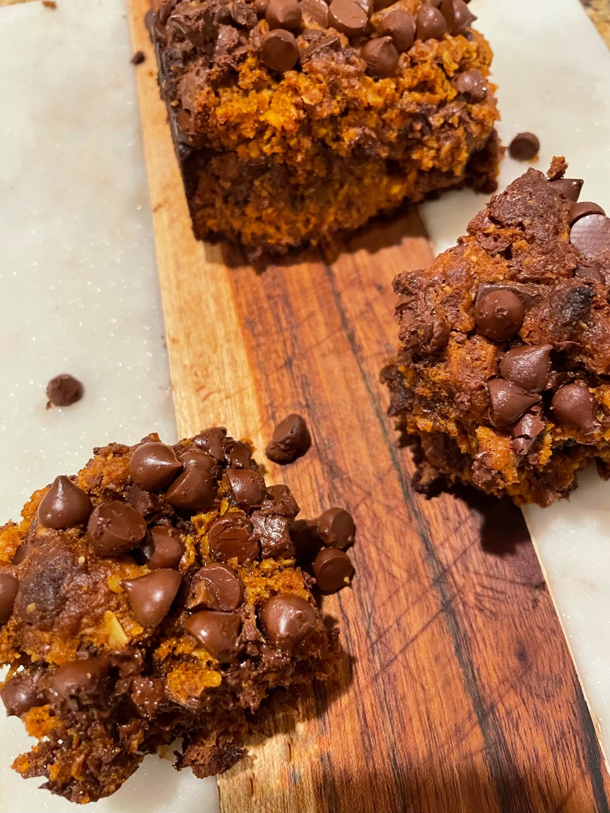

Info
This recipe was amazing, especially if you can't decide between having a cookie or a brownie! It’s so chocolaty and decadent!
Made by Maryam
Total Time
1 hour and 20 minutes
Servings
12 bars
Directions
- Follow the directions on the Trader Joe’s cookie mix to make the cookie dough. They are on the box and I included a picture for reference! Chill it in the fridge as you make the brownie mix.
- For the brownies, first mix flour, baking powder, cocoa powder and salt in a bowl. Add in the wet ingredients (olive oil, molasses, and vanilla) and mix. Melt 1/2 of chocolate chips chips and slowly mix into batter.
- For the brookie, first layer the brownie batter. Next spread clumps of cookie dough on top fully covering brownie (cookie dough will expand so it’s alright if there are some small gaps).
- Finally, on top put a layer of chocolate chips. Bake for 40-45 minutes checking consistently in the last 10 minutes. You will know the brookie is done when the center does not jiggle. Enjoy!!!